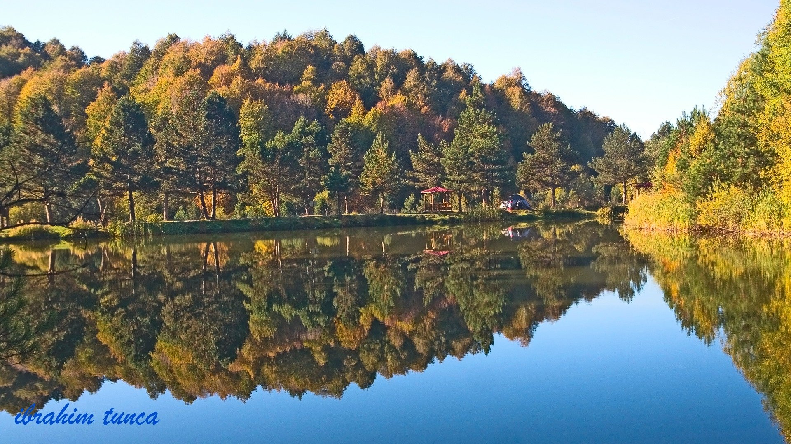

Domaniç Ormanları

Domaniç Ormanları Nerede?
Domaniç Ormanları, Kütahya ilinin Domaniç ilçesine bağlı Hisar Mahallesinde bulunmaktadır. Kütahya il merkezine ortalama 90 km uzaklıktadır. Ülkemizin doğal güzellikleri arasında yer alan Domaniç Ormanları, Dünyada sadece bu ormanda görülen ağaç türlerinden dolayı önemli bir yere sahiptir.
Domaniç Ormanları Hakkında
Kütahya-Domaniç eşsiz doğal güzelliğiyle, yeşilliğiyle ünlü bir ilçemizdir. Bu yeşilliğin en çok dikkat çeken yerini ise Domaniç ormanları oluşturmaktadır. Yöre halkı tarafından özellikle yaz aylarında çok tercih edilen bir yerdir. İnsanların nefes aldığı, dinlendiği bir yerdir. Bu ormanlık alan adeta cennetten bir köşedir. Eş dost ve arkadaşlarınızla buraya gelip birlikte burada çadır kurabilirsiniz, piknik ve mangal yapabilir, çadır kurabilirsiniz.
Domaniç Ormanları, aynı zamanda zengin bir alt flora ve yaban hayatı potansiyeline sahiptir. Bu ormanda, kayın ve karaçam yoğun olarak bulunur. Ayrıca meşe ve titrek kavak da bulunur. Diğer türlerden bahsedecek olursak ahlat, armut, eğrelti sarmaşığı, sırım bağ, böğürtlen, öksürük otu, ısırgan otu, çiğdem, ayı üzümü, yüksük otu, papaz külahı, yabani çilek olarak sıralayabiliriz. Ormanda bulunan hayvan türlerinden bahsedersek, ayı, yaban domuzu, geyik, tilki, porsuk ve kirpi bulunuyor. Bu ormanın bir de tarihi özelliği bulunmaktadır. Anadolu Selçuklu Uç Beyi olan Ertuğrul Gazi'nin yaz aylarında buraya gelip dinlendiği söylenmektedir.